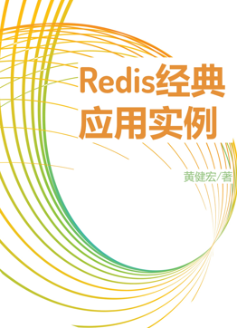
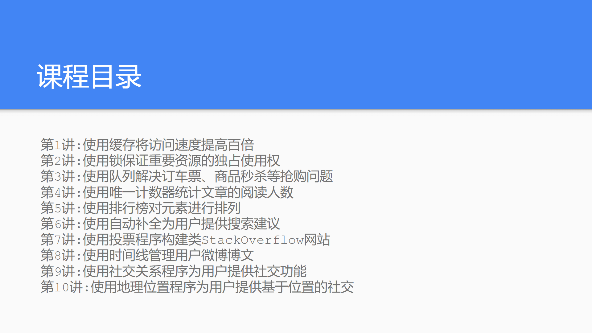

《Redis经典应用实例》读者服务网站¶
《Redis经典应用实例》一书将从内部组件、外部应用和数据结构三个方面向读者介绍Redis最常见、最经典的用法与用例，并且所有示例均附有完整的Python代码，方便读者学习和参考。
整书共包含32个大章，分为三个部分：
{kind=link}
内部组件：这个部分介绍的实例通常用于系统内部，比如缓存、锁、计数器、迭代器、速率限制器等，它们都是很多系统中不可或缺的部分。通过学习如何使用Redis构建这些组件，并使用它们代替系统原有的低效组件，你将能够大幅地提升系统的整体性能。
外部应用：这个部分介绍的实例都是一些日常常见的、用户可以直接接触到的应用，比如直播弹幕、社交关系、排行榜、分页、地理位置等。通过学习如何使用Redis构建这些应用，你将进一步地了解到Redis各个数据结构和命令的强大之处，并且还可以在实例应用已有功能的基础上，按需扩展出你想要的其他功能。
数据结构：这个部分介绍的实例是一些使用Redis实现的常见数据结构，比如先进先出队列、栈、优先队列和矩阵等。当你需要快速、可靠的内存存储数据结构时，它们可以作为其他程序的底层数据结构或是基本构件使用。
本书希望通过展示这些组件和应用，帮助你了解使用Redis解决各类问题的方法，并加深你对Redis各项命令及数据结构的认识，使你确实地成为能够使用Redis解决各类问题的Redis使用者。
购买方式¶
备注
本书目前已交稿，正等待出版社排版中，具体的发售日期待定。
目录¶
序
前言
第1部分：内部组件
缓存文本数据
缓存二进制数据
锁
带密码保护功能的锁
自增数字ID
计数器
唯一计数器
速率限制器
二元操作记录器
资源池
紧凑字符串
数据库迭代器
流迭代器
第2部分：外部应用
消息队列
标签系统
自动补全
抽奖
社交关系
登录会话
短网址生成器
投票
排行榜
分页
时间线
地理位置
第3部分：数据结构
先进先出队列
定长队列和淘汰队列
栈/后进先出队列
优先队列
循环队列
矩阵
逻辑矩阵
配套课程¶
《Redis经典应用实例》一书将附带随书课程，预计共10节课，每节课长度约为10分钟。
本课程预计将在书本发售时一并发布，敬请期待！
版本信息¶
本书所有示例代码均基于Redis 7.4和Python 3.12编写，使用的redis-py客户端版本为5.1.0b7。
作者简介¶
{kind=link}
黄健宏（huangz）是一位计算机技术图书作者和译者，他关注的领域包括数据库、编程语言、操作系统以及算法/数据结构等。
除了这本《Redis经典应用实例》之外， 黄健宏还是《Redis设计与实现》和《Redis使用手册》的作者， 此外他还翻译了《SQL实战（第2版）》、《Go语言趣学指南》、《Go Web编程》和《Redis实战》四本译作。
你可以通过huangz.works访问黄健宏的个人主页，又或者通过在微博@黄健宏huangz或推特@huangzworks来联系他。
加入读者群¶
你可以通过添加作者微信好友并发送消息“Redis实例入群”来加入本书的读者群，从而第一时间获取本书的最新消息。